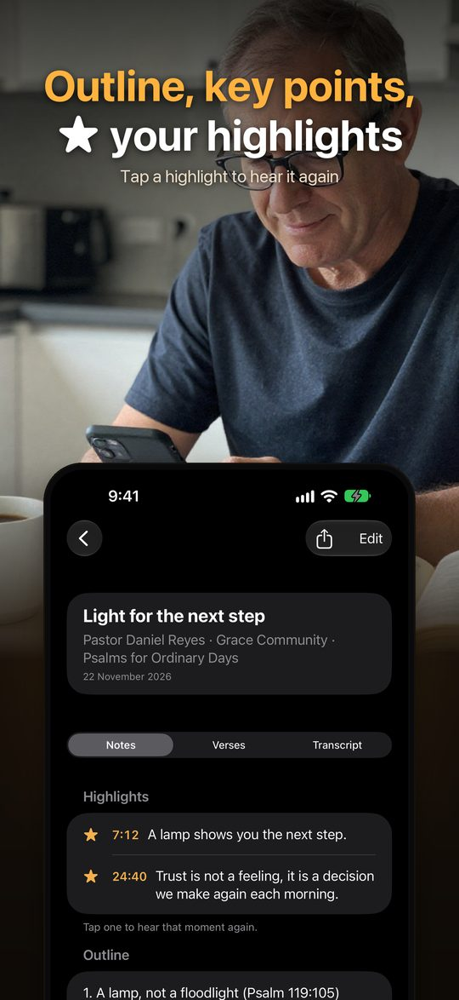
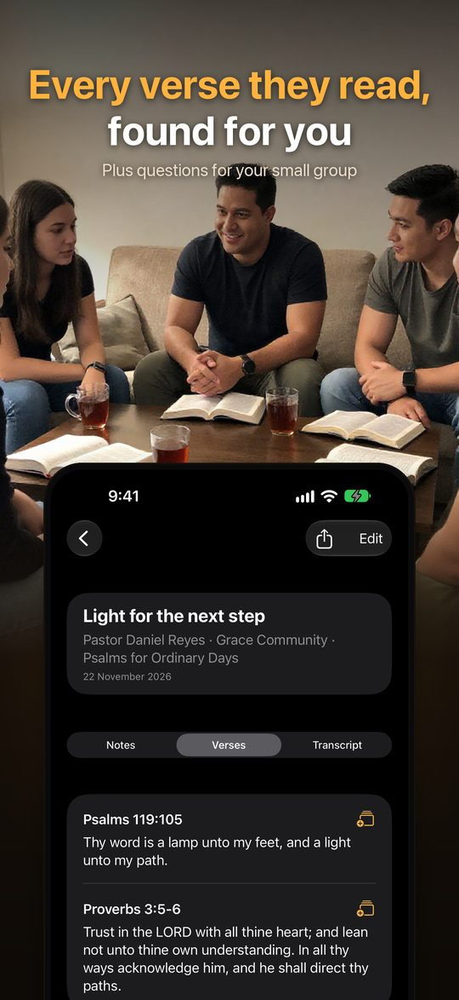

Sermon notes for iPhone & Apple Watch
Tap record when the message starts. Lampnote writes down what is said, finds every Bible verse the speaker reads, and gives you an outline, key points and questions for your small group.
One button
Everything happens on your phone, while you listen.
The words appear as the speaker talks, even with the screen locked and no internet.
“John 3:16”, “约翰福音3章16节”, “يوحنا ٣: ١٦” or “Juan capítulo 3”: every reference is picked up and shown in your Bible translation.
A title, outline, key points and three questions for your small group, written on the device.
Tap ★ when something hits home. Later, tap the highlight to hear that moment again.
Pause, mark and stop from your wrist, and practise memory verses during the week.
No account, no ads, no tracking. Recordings and notes never leave your phone.
See it


For every church
Lampnote has no account and no server to upload to.
Yes. No ads, no account and no subscription.
No. The recording, the transcript and your notes stay on your phone. Lampnote turns speech into text on the device itself.
It finds the language by itself, or you can pick one: English, Chinese (Mandarin and Cantonese), Arabic, Spanish, Portuguese, French, Korean, Japanese, German and more. Bible references are recognised in English, Chinese, Arabic, Spanish, Portuguese, French and Korean.
Yes. The first time you use a language your phone downloads its speech model once. After that, recording and transcription work offline. Looking up a new Bible verse needs the internet once; it is then kept on your phone.
Yes. Start a recording on your iPhone, then pause, mark a moment with ★ and stop from your watch. Your last sermon's key points and your memory verses are on the watch too.
Many churches are happy for people to record, but some are not. Please follow your church's guidance and ask the speaker when you're unsure.
Visit support or email bestappsclub@gmail.com.